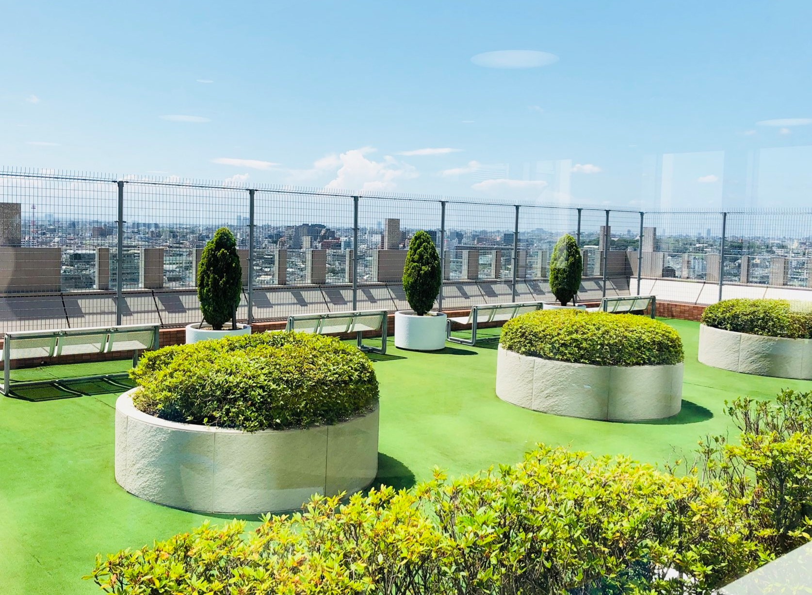

私のお勧め①12Fラウンジ 
<!DOCTYPE html> 
<html lang=“ja”> 
<head> 
<meta charset=“UTF-8”> 
<meta name=“description” 
 content=“このサイトでは、日本工学院専門学校のお勧めを紹介しています。”> 
<meta name=“viewport” content=“width=device-width, initial-scale=1”> <title>日本工学院のお勧め -12Fラウンジ</title> 
</head> 
<body> 
<header> 
<!-- 作成者の学籍番号と氏名 --> 
<p>作成者：K020C1563 奥山 勝大</p> 
<!-- Web サイトのタイトル --> 
<h1>日本工学院のお勧め</h1> 
<!-- グローバルナビゲーション --> 
<nav> 
<ul> 
<li><a href="../top_page/index.html"> 
トップページ</a></li> 
<li><a href="../myfavorite1/index.html"> 
①12F ラウンジ</a></li> 
<li><a href="../myfavorite2/index.html"> 
②安くておいしい学食</a></li> 
<li><a href="../myfavorite3/index.html"> 
③きれいなトイレ</a></li> 
<li><a href="../myfavorite4/index.html"> 
④購買部</a></li> 
</ul> 
</nav> 
</header> 
<main> 
<section> 
<!-- ページの説明 --> 
<h2>12F ラウンジ</h2> 
<!-- 説明 --> 
<p>12階のスカイラウンジからは羽田空港などが見えます<br> 
外の景色がきれいです<p> 
<!-- 写真 -->
<a href="./images/_20201120_131243.JPG"> 
</a> </section> 
</main> 
<footer> 
<a href="../top_page/index.html">ホームに戻る</a> 
<!-- 著作権表記 --> 
Copyright &copy; 2020 K.Okuyama All Rights Reserved. 
</footer> 
</body> 
</html>
